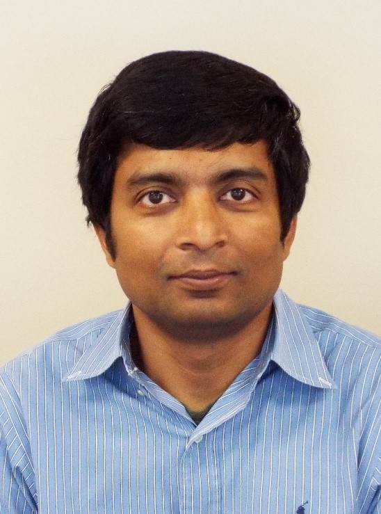
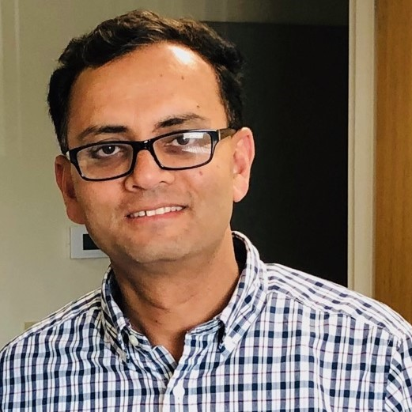
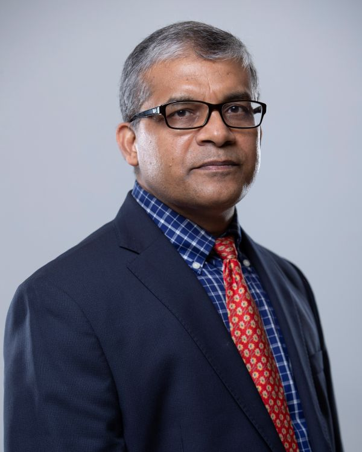
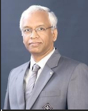

Professor Latifur Khan
Fellow of IEEE, IET, BCS
Department of Computer Science, University of Texas at Dallas (UT Dallas), USA

Trustworthy and Generative AI for Social Good, Including Cybersecurity
This presentation will focus on two key areas: fairness-aware machine learning to facilitate trustworthy AI and generative AI, including large language models (LLMs), for addressing critical societal challenges.
Fairness-Aware Machine Learning: We explore fairness constraints in dynamic and changing environments, particularly in online learning settings where data arrives sequentially and its distribution may evolve over time. In these scenarios, the learning system must adapt while adhering to fairness requirements.
To tackle this, we proposed a novel algorithm that assumes data collected at any time can be disentangled into two representations: an environment-invariant semantic factor and an environment-specific variation factor. The semantic factor is then used for fair prediction under group fairness constraints. Additionally, we investigated fairness-aware active learning to prioritize the selection of the most critical data points for labeling in streaming data.
Generative AI Applications: In the realm of generative AI, we conducted research on global monitoring of conflicts and political violence by analyzing extensive text datasets. Collaborating with a multidisciplinary team, we developed ConfliBERT, a domain-specific pre-trained language model focused on conflict and political violence in English. ConfliBERT is publicly available on GitHub and Hugging Face, with over 14,000 downloads since its release. Our model outperforms standard LLMs in tasks such as classification and question answering, demonstrating its utility in specialized applications.
In collaboration with researchers from NIST, we worked on automating the extraction of attack techniques from Common Vulnerabilities and Exposures (CVE) and Cyber Threat Intelligence (CTI) reports. These techniques are mapped to the standardized MITRE ATT&CK framework using LLMs and active learning. We will illustrate how this curated knowledge empowers security analysts to respond more effectively to cyber threats. Additionally, leveraging LLMs, including Retrieval-Augmented Generation (RAG), we identified gaps in federal and state legislation regarding data privacy and cybersecurity in the autonomous vehicle domain.
Acknowledgments: This work is supported by NSF, DOT, NIH, ONR, ARMY, and NSA. The ConfliBERT project is a collaboration with Dr. Patrick Brandt and Dr. Jennifer Holmes (School of Economic, Political, and Policy Sciences, UT Dallas). The fairness-aware machine learning research is in collaboration with Dr. Feng Chen (Computer Science).
Dr. Latifur Khan is currently a full Professor (tenured) in the Computer Science department at the University of Texas at Dallas, USA where he has been teaching and conducting research since September 2000. He received his Ph.D. degree in Computer Science from the University of Southern California (USC) in August of 2000. In addition, he received his bachelor degree in Computer Science and Engineering (CSE) from Bangladesh University of Engineering and Technology (BUET) with first class honors (2nd position).
Dr. Khan is a fellow of IEEE, IET, BCS, and an ACM Distinguished Scientist. He has received prestigious awards including the IEEE Technical Achievement Award for Intelligence and Security Informatics, IEEE Big Data Security Award, and IBM Faculty Award (research) 2016. Dr. Khan has published over 300 papers in premier journals and prestigious conferences. Currently, Dr. Khan’s research focuses on big data management and analytics, data mining and its application to cyber security, and complex data management including geospatial data and multimedia data. His research has been supported by grants from NSF, NIH, the Air Force Office of Scientific Research (AFOSR), DOE, NSA, IBM, and HPE. More details can be found at www.utdallas.edu/~lkhan.
Dr. Mohammad Shahidul Islam
Chief Scientist, HL Mechatronics, Bay City, Michigan, USA

Rare-earth Free PMSMs for High Performance Applications – Challenges and Opportunities
Electric motors for high performance applications require stringent performance goals. Besides smooth torque and low acoustic noise requirements, the motor should exhibit lower braking torque under certain fault conditions. The rare-earth (RE) based permanent magnet (PM) motors offer high torque density and better packaging but exhibits higher drag torque due to the presence of strong RE magnets. The high cost and volatile supply chain of RE magnets inspired researchers to seek rare-earth free electric machines. However, due to the absence of RE magnets, such motors typically have lower torque density, lower power factor, and tend to exhibit higher torque ripple but exhibits lower braking torque under shorted conditions. In this presentation, a PM (Ferrite) assisted synchronous reluctance (PMa SynRel) motor is designed to improve the torque density and power factor while exhibiting lower braking torque. The motor is compared to a sintered NdFeB based IPM design to satisfy similar torque/speed requirements. Optimization is performed to ensure low torque ripple and torque density in the entire operating range. The risk of demagnetization of Ferrite magnets in PMa SynRel under extreme cold (-40°C) is analyzed. The RE magnet free electric motor could be a viable and appealing contender for high performance applications requiring low torque ripple and low braking torque under faulted conditions.
Dr. Mohammad Islam received the BSc and the MSc degrees from Bangladesh University of Engineering and Technology (BUET), Dhaka, Bangladesh, and the PhD degree from the University of Akron, Ohio, USA, all in electrical engineering, in 1994, 1996 and 2001, respectively. Currently, he is working as a Chief Scientist at HL Mechatronics in Bay City, Michigan, USA where he responsible for managing design and development of electric motors & actuators, magnetic & inductive sensors and EMC related activities for automotive applications. From 1994 to 1996, he was with the electrical and electronic engineering department of BUET as a lecturer. From 2001 to 2013 he worked for Delphi Steering and Nexteer Automotive in Saginaw, Michigan as a staff research engineer at the R&D Center.
Dr. Islam is widely known in the automotive industry for the development of permanent magnet synchronous motors, innovative low-cost sensors and actuators, particularly torque sensors, position sensors, steering/braking actuators with permanent-magnet (PM) brushless motors. Since their inception, the motors and sensors designed by Dr. Islam have been produced in tens of millions by many automotive OEMs worldwide. As a recognition of his notable contributions to the technical community and real world applications, Dr. Islam was elevated to IEEE Fellow class of 2016 with the citation “for development of electromagnetic sensors and actuators for automotive applications”. He continued to develop electric motors and sensors for redundant safety critical architectures as more and more electrifications happening in transportation sectors. In 2019, Dr. Islam was awarded the prestigious Nagamori award from a global pool of nominations with the citation “Contributions to electric motors and electromagnetic actuators and sensors for safety critical automotive applications”.
Dr. Islam served as the chair of the transportation systems committee of IEEE IPCSD-IAS. He served in IEEE IAS executive board as the Chair of awards department from 2013-2016. He served as vice chair and chair in IEEE IAS fellow review committee during 2017-2018 and 2019-2020, respectively. He also served in the IEEE fellow review committee in 2021. He served as the technical program chair (TPC) of ECCE 2022 and is serving the same for ECCE 2025. Dr. Islam has published 25 journal and over 47 conference papers. He currently holds 37 US patents. His research interests include electric machines, adjustable speed drives and EMC for automotive applications.
Mohammad Nasir Uddin
Fellow IEEE, Fellow EIC
Professor and Coordinator, Lakehead University, Barrie campus, ON, Canada

Recent Advances in Power Converter Control Techniques for DFIG-WECS
Over the last few decades wind energy has emerged as one of the fastest growing mainstream power technologies due to its low cost and environmentally friendly nature compared to conventional fossil fuel-based power generation. Considering available options of state-of-the-art generator technologies in wind energy conversion system (WECS), doubly fed induction generator (DFIG) has become popular because of its economic operation, ability to regulate in sub-synchronous or super-synchronous speed and decoupled control of active and reactive power. Harnessing regulated power supply from unpredictable wind blow, extraction of maximum power from intermittent generation and supervision on nonlinear system dynamics of DFIG-WECS are some of the critically challenging issues for wind energy system. Maximization of the power yielded from wind turbine is possible by optimizing tip-speed ratio, turbine rotor speed or torque and blade angle. Traditionally, maximum power point tracking (MPPT) control algorithm is based on the Hill Climb Search (HCS) method due to its simple implementation and turbine parameter-independent scheme. Since the conventional HCS algorithm has few drawbacks such as power fluctuation and speed-efficiency trade-off, a new adaptive step size based HCS controller is developed in this work to mitigate its deficiencies by incorporating wind speed measurement in the controller. Again, conventional feedback linearization controllers are sensitive to system parameter variations and disturbances on grid-connected WECS, which demands advanced control techniques for stable and efficient performance considering the nonlinear system dynamics. An adaptive backstepping based nonlinear control (ABNC) scheme with iron-loss minimization algorithm for DFIG is also developed in this work to obtain both improved dynamic performance and reduced power loss.
In order to verify the effectiveness of the proposed control schemes, simulation models are designed using MATLAB/Simulink. The proposed MPPT control, nonlinear control for grid-connected mode of DFIG-WECS has been successfully implemented in real-time using DSP controller board DS1104 for a laboratory 350 W DFIG. In the laboratory environment a 4-quadrant dynamometer is used to emulate the wind turbine to provide variable wind speed to the generator. The performance of the proposed ABNC is also compared with the benchmark tuned proportional-integral (PI) controller under different operating conditions such variable wind speed, grid voltage disturbance and parameter uncertainties and it exhibits excellent grip over the rotor side and grid side converter control.
M. Nasir Uddin received the B.Sc. and M. Sc. degrees both in electrical & electronic engineering from Bangladesh University of Engineering and Technology (BUET), Dhaka, Bangladesh, and the Ph.D. degree in electrical engineering from Memorial University of Newfoundland, Canada in 1993, 1996, and 2000, respectively.
He has been serving as a Professor in the Department of Electrical Engineering, Lakehead University (LU), Thunder Bay, ON, Canada since August 2001. He also served as a visiting Prof. at Univ. of Malaya (2013, 2012, 2011), University of Tenaga Nasional (UNITEN) (2018-2019), Malaysia, Tokyo University of Science (2010), Japan and North South University (2006), Dhaka, Bangladesh. Previously, he was an Assistant Professor in the Department of Electrical and Computer Engineering, University of South Alabama, USA from January 2001 to May 2001, an Assistant Professor from 1996 to 1997 and a lecturer from 1994 to 1996 at BUET. He possesses more than 25 years of teaching experience and has authored/coauthored over 270 papers in international journals (68 in IEEE Transactions and 22 in other refereed journals) and conferences.
Dr. Uddin is a registered professional engineer in the province of Ontario, Canada. Currently, he is serving as an Associate Editor for IEEE Transactions on industry Applications. During 2016-2017 he served as an Executive Board Member of IEEE Industry Applications Society (IAS) and Chair of IEEE-IAS-Manufacturing Systems Development and Applications Department. Earlier, he also served as one of the Technical Program Committee Chairs for IEEE Energy Conversion Congress and Expo (ECCE) 2015 at Montreal, Canada. He was the Technical Program Committee Chair for the IEEE-IAS [Industrial Automation and Control Committee (IACC)] Annual Meetings in 2011 (Orlando) and 2012 (Las Vegas). He served as Transactions Papers Review Chair (four years, 2009–2010 and 2013–2014) for IEEE Transactions on Industry Applications (IACC). Earlier he served IEEE IAS IACC for 9 years in different capacities (secretary-elected, vice-chair, chair and past-chair). Due to his outstanding contributions IEEE-IAS IACC recognized him with the IEEE IAS Service Award 2015. He was bestowed upon with LU Distinguished Instructor award in 2023 and LU Distinguished Researcher Award in 2010. He was the recipient of four Prize Paper Awards from IEEE IAS IACC and both 2004 Contributions to Research and Contributions to Teaching Awards from LU. His research interests include renewable energy, motor drives, power system and intelligent controller applications.
K V S Hari
Director, Centre for Brain Research and Professor
Department of ECE, Indian Institute of Science, Bangalore

Dictionary Based Channel Estimation and Precoding Techniques in Wireless systems using Reconfigurable Holographic and Intelligent Surfaces
Dictionary refers to a collection of known signals or vectors that are used for wireless communication tasks such as channel estimation or detection. Dictionary learning is the process of automatically learning the parameters. This process is typically carried out similar to unsupervised learning techniques, where the dictionary is learned directly from the received data without any prior knowledge of the channel characteristics. The dictionary learning algorithm has two stages: the sparse coding stage and the dictionary update stage.
A fast dictionary learning (FDL) algorithm for CSI feedback is presented that delivers normalized mean squared error (NMSE) performance comparable to the K-SVD algorithm but with a significant reduction in computational complexity, ranging from 18% to 45%. The next idea is a Common dictionary learning (CDL) algorithm for a wideband system for multi-UE systems. We then focus on the sum-rate maximization of a millimeter-wave system involving reconfigurable holographic surfaces (RHS), intrinsically amalgamated with reconfigurable intelligent surface (RIS).
K V S Hari is the Director, Centre for Brain Research and Professor, Department of ECE, Indian Institute of Science, Bangalore. He holds a PhD (Systems Science) from UC San Diego, an MTech (Radar and Communication Engineering) from IIT Delhi, and a B.E (ECE) from Osmania University College of Engineering. He has been a visiting faculty at Stanford University and Affiliate Professor at KTH- Royal Institute of Technology, Stockholm. His research interests are in Signal Processing and Deep Learning with applications to 5G wireless communications, Dual Function Radar and Communication systems, Autonomous Navigation, Neuroscience, and affordable MRI systems.
He is a co-author of the IEEE 802.16 standard on wireless channel models and has conducted drone-ground wireless channel modelling experiments. He also served as the Chair, Standardisation Committee, Telecom Standards Development Society, India. He led the British Telecom India Research Centre (BTIRC), IISc, which focused on AI and 5G communication systems.
He was an Editor of EURASIP’s Signal Processing journal and is currently the Editor-in-Chief (Electrical Sciences) of Sadhana, the journal of the Indian Academy of Sciences published by Springer. He is a Fellow of the Indian National Academy of Engineering, Indian National Science Academy, and IEEE. He was on the Board of Governors, IEEE Signal Processing Society as Regional Director-at-large for R10 and VP-Membership (2020-22).